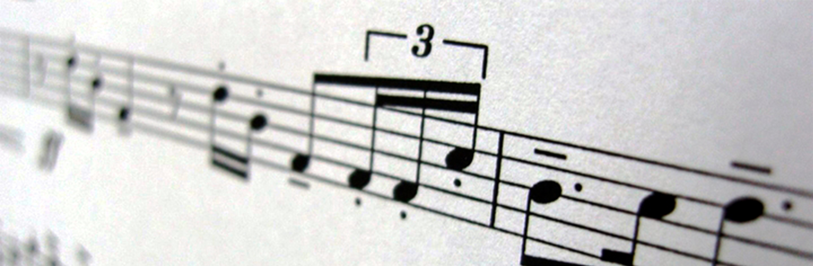

Music
Intro
Okay, so this music page is in which check out my own comprehensive reference library of music and stand-up comedy song and album playlists below, enjoy. :)
Music & Stand-Up Comedy Reference Playlist Library
So this is my most comprehensive library, in which lists a variety of worldwide music and stand-up comedy reference playlists available with their links that you click on. The only criteria is that the music and stand-up comedies, including hits, gems and even deep cuts, both charted and even non-charted, must meet its lasting mainstream and eclectic popularity in specific regions, inclduing in the United States and internationally, and also including those based on physical and digital sales, terrestrial, satellite, pay television, internet radio plays, online streaming, plus the all versions of their accompanying official audio, lyrical, live and music videos' music pay televison channel plays. The confirmed playlist music and stand-up comedies music include its highest peak positions ever first reached and years at original releases, first and final chart entries, availability at physical and digital music stores, music streaming services and public domain music download websites once fully-restored and/or the crispest ever. The music and standup comedy must be restricted only to its appropriate and SFW content rating for sensitive listeners, including only in their clean versions, in order to become listed under each reference playlist. On my final playlist webpage, each song titles must not be duplicates of the same or different names, but only unique and in Chicago-styled title case, while each name of the artist and ensemble must include lead artist and ensemble, as well as featured artists and ensembles (for “featuring credits”), backing vocalists, orchestras and/or guest instumentalists. Each playlist has been divided into two sections: the 'Regular Songs' section must onyl list songs that exclude all the songs listed under the 'Christmas Songs' section, while the 'Christmas Songs' section must only list all Christmas, winter holiday and New Year's and related songs, plus songs about 'winter', 'snow' and 'cold December days'. So I've started with my own preliminary music and stand-up comedy reference playlists that you'd prefer for this section my webpage here, in which I've started off with the genre of 1890-today's mainstream and eclectic pop and adult contemporary music in the United Statesand then rock next, then country, and so on. If you'd like, check out the preliminary and final version of playlists by clicking their links below. So please let me know by checking the floating bottom contact footer once you have any general comments and/or suggestions on these playlists that I could include, merge, or split, including catchy description. Thanks. :)
Music & Stand-Up Comedy Reference Playlist Listings
Jazz/Blues/Vocal Standards
Jazz/Blues/Vocal Standards
- The Pre-Radio Years - 1890-1919 mainstream and eclectic jazz/pop music in the United States.